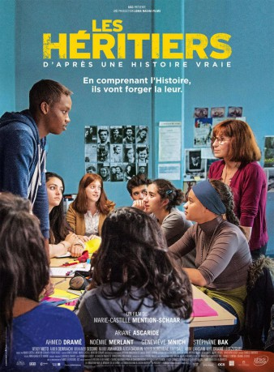

#3783 Die Schüler der Madame Anne
 
 IMDB-Wertung: 7.0 / 10
IMDB-Wertung: 7.0 / 10  Metascore: 0
Metascore: 0 
Anne Gueguen ist Geschichtslehrerin und übernimmt eine 11. Klasse am Leon-Blum-Gymnasium im Pariser Vorort Creteil, einem sozialen Brennpunkt. Für die engagierte Pädagogin bedeuten die Schüler dieser Klasse eine echte Herausforderung, denn in der Schule tragen sie ihre persönlichen und kulturellen Konflikte aus, wohlwissend, dass sich in der Welt dort draußen niemand für sie interessiert und ihre Zukunft wenig rosig aussieht. So wird das Klassenzimmer zur Bühne ihrer Aggressionen, doch Madame Gueguen weiß, dass mehr in diesen verstockten Kindern schlummert, als sie sich selbst eingestehen wollen: in dem jungen Muslim Malik, dem stillen Théo, der aggressiven Mélanie und allen anderen. Sie meldet ihre Schüler für einen renommierten nationalen Wettbewerb zum Thema der französische Resistance an und weckt in ihnen den Willen, etwas zu lernen – über die Geschichte Frankreichs und über sich selbst.
Jahr: 2014
Dauer: 105 Minuten
FSK: 12
Land: Frankreich Studio: Neue Visionen FilmverleihTonspuren:
Untertitel: Deutsch,
Auflösung: 1080p (1920x800) Größe: 6502 MB
Genre: Drama
Regisseur: Marie-Castille Mention-Schaar
Drehbuch: Timothy A. Chey
Soundtrack:
Darsteller:
- Noémie Merlant als Mélanie
 Jassem Mougari als Élève insultant
Jassem Mougari als Élève insultant Denzel Washington als Frank Lucas , archive footage, uncredited
Denzel Washington als Frank Lucas , archive footage, uncredited Ariane Ascaride als Anne Gueguen
Ariane Ascaride als Anne Gueguen- Ahmed Dramé als Malik
- Geneviève Mnich als Yvette
 Stéphane Bak als Max
Stéphane Bak als Max- Wendy Nieto als Jamila
- Aïmen Derriachi als Saïd
- Mohamed Seddiki als Olivier / Brahim
- Naomi Amarger als Julie
- Alicia Dadoun als Camélia
- Adrien Hurdubae als Théo
- Raky Sall als Koudjiji
- Amine Lansari als Rudy
- Koro Dramé als Léa
- Xavier Maly als Le proviseur
- Léon Zyguel als Himself
- Martin Cavanno als
- Simone Veil als Herself , archive footage
Datei: X:\2014(N-Z)\Schüler der Madame Anne, Die (2014, FSK12, 1920x800).mkv seit 09.06.2016
Festplatte: HD 2013(I-Z)-2014(A-Z)
 Es gibt insgesamt 163 Filme in der Gruppe '2014(N-Z)'
Es gibt insgesamt 163 Filme in der Gruppe '2014(N-Z)'